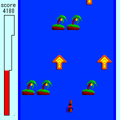
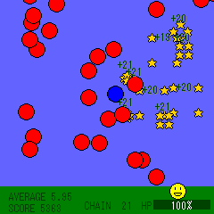
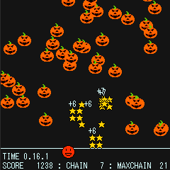
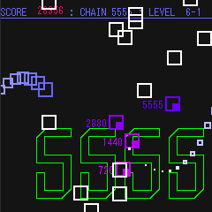
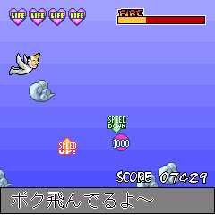
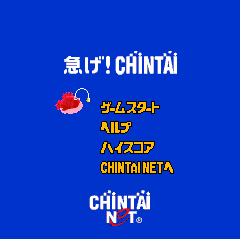

CTO, ENECHANGE Ltd., Apr. 2015 - Dec. 2019
Software Engineering, machine learning and hiring.
CTO, Cambridge Energy Data Lab, Ltd., Sep. 2013 - Apr. 2015
Worked on software engineering, machine learning, and developing energy provider switching service
Enechange.
Software Engineer, Sony Corporation, Apr. 2012 - Aug. 2013
Developed Sony cloud platform.
Part-time Engineer, Ohma Inc., Jan. 2011 - Mar. 2012
Developed crowd-funding service
READYFOR? which was launched on 29
th March 2011.
Led 3 engineers. Ruby on Rails, Amazon's EC2 and S3 services, and Git.
MS Graduate School of Information Science and Technology, The University of Tokyo April 2010 to March 2012
Concentration: Natural language processing, social applications.
Laboratory: Kumiko Tanaka-Ishii's Lab.
Projects: Led a team of four in developing "Social Games based on Twitter" and its framework using Ruby on Rails on a personal home server. Users can play these games within their Twitter Timeline.
BE Dept. of Information Engineering, School of Engineering, Nagoya University April 2006 to March 2010
Concentration: Natural language processing.
Laboratory: Shigeki Matsubara Lab.
Projects: "Automatic Estimation of Twitter Users' Situation for Mobile Application Recommendation": Analyzed tweet contents especially describing users' activity on Twitter.
Atsuo Shiraki,
"Collecting" Social Games Based on Twitter -Summary of Research to Date and Development of the "Collectter" Framework-,
Digital Games Research Association JAPAN 2010, pp.19-26. (Dec. 2010)
Atsuo Shiraki, Motoki Yano, Yuta Sakai, Shunsuke Kozawa, Shigeki Matsubara, Nobuo Kawaguchi,
Automatic Estimation of Twitter Users' Situation for Mobile Application Recommendation,
Multimedia, Distributed, Cooperative, and Mobile Symposium. DICOMO2010, pp. 251-257. (Jul. 2010)
Motoki Yano, Atsuo Shiraki, Katsuhiko Kaji, Shigeki Matsubara, Nobuo Kawaguchi,
Context-Aware Mobile Service Recommendation System using Consumer-generated Information,
Multimedia, Distributed, Cooperative, and Mobile Symposium. DICOMO2010, pp. 221-229. (Jul. 2010)
Facebook Hacker Cup 2011
Advanced to Round 2 (Feb. 2011)
Google Code Jam Japan 2011
Ranked 176 and got T-short (Oct. 2011)
Speech, Language and Communications Research at the University of Tokyo 2010
Best Presentation Award (2nd Place) (Sep. 2010)
Twitter Bot: PokemonNow
Developed "PokemonNow", a game that uses Twitter's timeline.
PokemonNow uses the Twitter API with OAuth to achieve fast processing of high volume
mentions from many users at short intervals, and to reply to users effectively.
At its peak PokemonNow was played by 11000 users.
(
http://poke-now.com/, @
poke_now)
Development Experiment at Nagoya University
Developed a TCP/IP socket-based Monopoly-style game with 5 students for a team development class. This project was highly appraised by the professor.
iAppli
Developed 7 iAppli which is mobile application running in Japanese mobile phones in Java. Used Perl CGI and connections between Perl and Java to create score-ranking scripts for these apps. Downloaded over 100,000 times in total. (
http://asasas.net/ )
Provided development work on a joint project with OpenDoor Inc.






Applied Information Technology Engineer Examination
Achieved this level 3 (of 4) qualification of the Information-Technology Promotion Agency Japan (IPA) in November 2010.
Mensa
Official member of Mensa since November 2010.